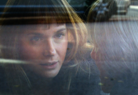

L'Accademia delle Muse
(The Academy of the Muses)
José
Luis Guerín
Spanien 2015
92 min – HD – Spanisch,
Katalanisch, Italienisch – Beste Regie, Cartagena Festival
Deutsche Erstaufführung
B+K+S: José Luis Guerín – Mit Raffaele Pinto, Emanuela Forgetta,
Rosa Delor Muns, Mireia Iniesta
T: Amanda Villavieja – SD: Marisol Nievas, Jordi Monrós – P: Núria
Esquerra, Orfeo Films
“Teaching is seduction“, says Professor Raffaele Pinto, who in real life teaches philology in Barcelona. In this mix of documentary and fiction, we see him give a course about muses to a group of female students. Not just muses in old texts, but also how women can be muses today.
As the semester goes on, it is clear that both the professor and the students are applying the theories discussed in class in their private lives. When his wife attacks him for flirting with students, Pinto defends himself with dialectics from classical literature. Guerín made his fascinating and thought-provoking film with minimal means. Stylistically he keeps it as pure as possible: no music, no visual extras. He has nothing to hide.
”Guerín‘s films purposefully confound narrative and documentary traditions, discovering rich narrative threads woven into the tapestries of his real life subjects and unraveling mysteries without solutions that nevertheless leave the viewer deeply satisfied.” – Harvard Film Archive
sonday 9 oct 11 a.m. theatiner filmkunst
José Luis Guerín As one of Europe's most influential and innovative non-fiction filmmakers, José Luis Guerín (born in 1960 in Barcelona) occupies a unique place in the vibrant and still largely underappreciated history of Catalan cinema. A brilliantly original director and a professor at Barcelona's prestigious Universitat Pompeu Fabra, Guerín has brought a new dynamism and experimental spirit into Catalan and Spanish cinema. Together with his colleague, the radical documentarian Joaquim Jordà, Guerín has transformed the Documentary Program at Pomeu Fabra into one of Europe's most important centers for experimental non-fiction work and inspired a new generation of young filmmakers, such as Mercedes Alvarez
Filme En construcción 2001 – Unas fotos en la ciudad de Sylvia 2007 (3. UX) – En la ciudad de Sylvia 2007 (3. UX) – Correspondencia Jonas Mekas - J.L. Guerín 2011 (6. UX) – L'Accademia delle muse 2015